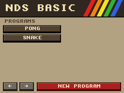
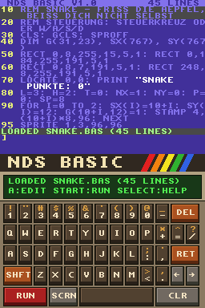
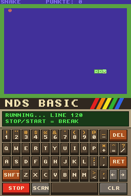
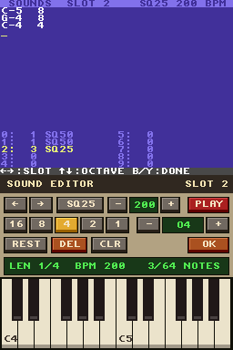
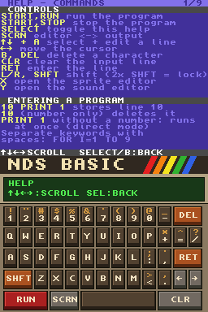

>_
Editor & keyboard
Retro touch keyboard with shift lock, listing with line numbers, select and edit lines with the d-pad.
LIST RUN NEW EXIT
**** NINTENDO DS HOMEBREW ****
A BASIC interpreter in the style of the 80s home computers – for the Nintendo DS. Type programs on the retro keyboard, see your lines with their line numbers up top, and hit RUN. With graphics, hardware sprites, sound and saving to SD card.
Runs on flashcarts, on the DSi/3DS (e.g. TWiLight Menu++) and in emulators such as melonDS. Source code on GitHub.


A single .nds file that turns your DS into a home computer.
After start-up a little low-poly computer swings around in 3D on the top screen, while the bottom screen lists your saved programs – one tap and they are loaded.
In the editor the top screen shows the listing with line numbers, the bottom screen a keyboard in the style of the breadbin era. Lines with a number are stored, everything else runs right away – just like back then. RUN starts, STOP or START breaks.
On top of that there is a sprite editor for painting with the stylus, a sound editor with a piano keyboard and a built-in help page with all commands (SELECT). The interface follows the system language of your DS – German or English.
/nds-basic on SDEverything you need for small games and experiments – right on the device.
Retro touch keyboard with shift lock, listing with line numbers, select and edit lines with the d-pad.
LIST RUN NEW EXIT
A 256×192 pixel layer behind the text: points, lines, rectangles, circles and flood fill in 16 colours.
PLOT LINE RECT CIRCLE PAINT
256 sprite images (8×8) with a touch editor, 64 movable hardware objects with collision checks.
SPRITE SPRHIT() STAMP
10 tune slots, played in on a piano keyboard. Square waves with three pulse widths, or noise.
SOUND n SOUND n,1
Programs including sprites and sounds as readable text files – editable on the PC, selectable on the title screen.
SAVE LOAD DIR DELETE
Button input as a bit mask, keyboard buffer, pauses at 60 Hz, random numbers – and ready-made examples.
JOY INKEY$ PAUSE RND
Top screen above, touch screen below – captured in the emulator.






Line numbers, GOTO, PRINT – plus sprites zipping across the screen. Paint a ball in slot 1 of the sprite editor and play a note into slot 0 of the sound editor – this program makes the ball bounce and beeps on every hit.
10 CLS: X=10: Y=10: DX=2: DY=1 20 PRINT "HELLO NINTENDO DS!" 30 SPRITE 0,1,X,Y,2 40 X=X+DX: Y=Y+DY 50 IF X<0 OR X>240 THEN DX=-DX: SOUND 0 60 IF Y<0 OR Y>176 THEN DY=-DY: SOUND 0 70 PAUSE 1: GOTO 30 READY. RUN
Three steps from download to your first RUN.
Get nds-basic.nds (@ROM_SIZE@) – the file is built from the source code automatically on every commit.
Put it on the SD card of your flashcart or DSi/3DS (TWiLight Menu++) – or simply open it in melonDS.
Programs are saved to /nds-basic on the card. For SD in the emulator, enable
DLDI SD emulation in melonDS.
/nds-basic – they show up on the title screen.
Controls, every command and function, graphics, sprites, sound, saving and the examples – described in detail.